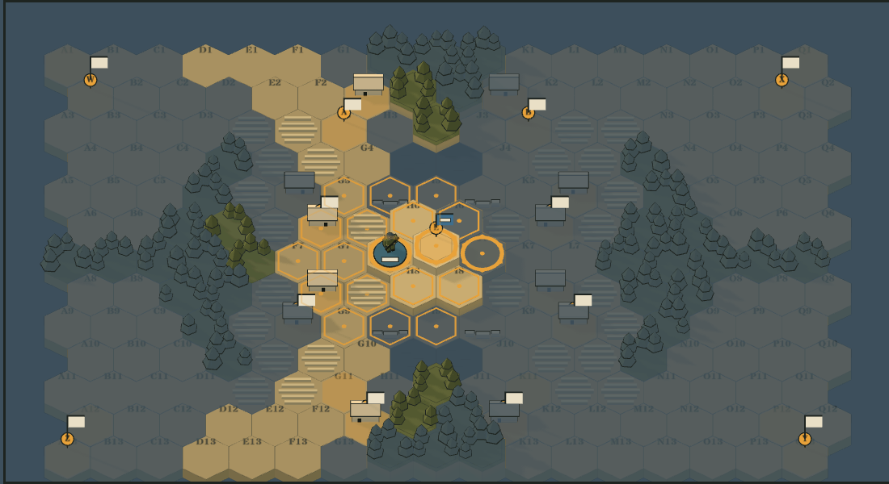
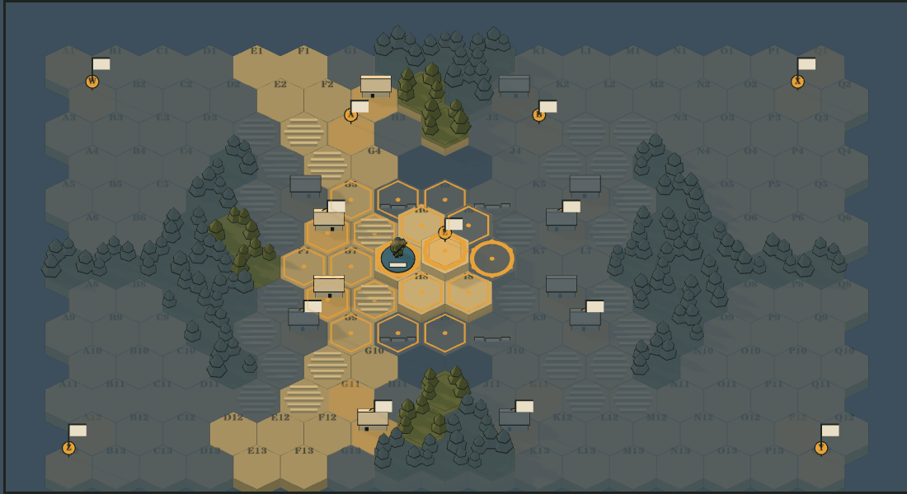
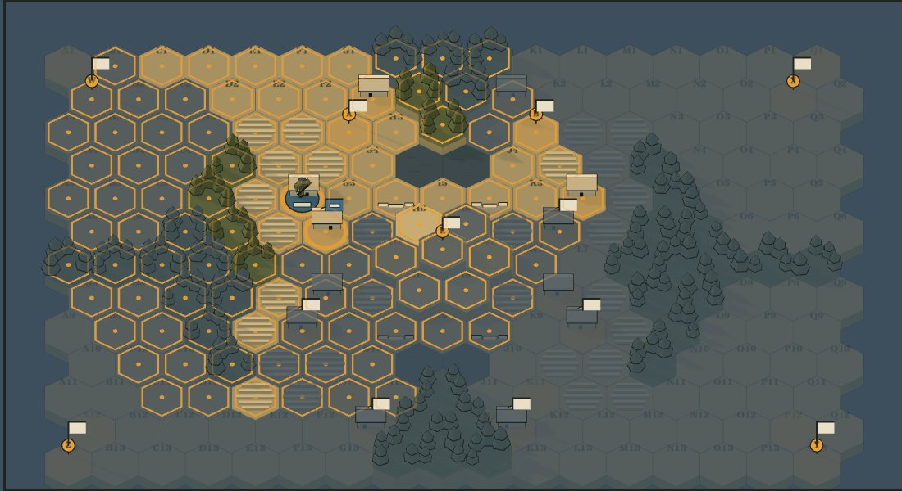
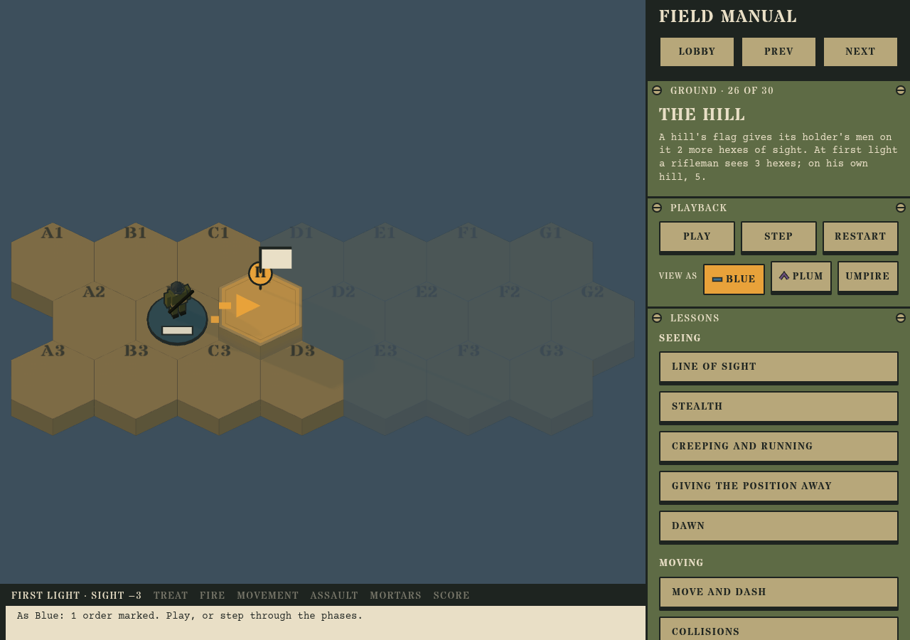
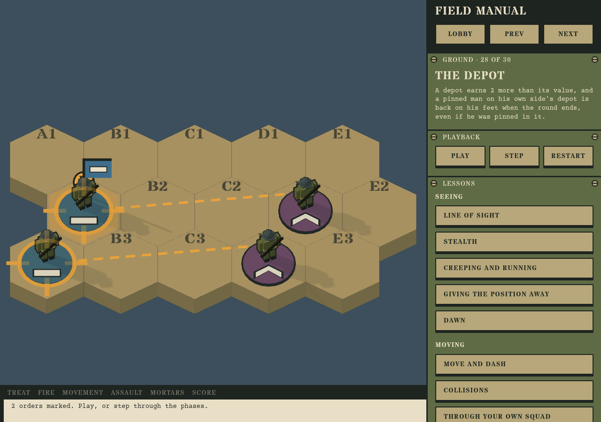
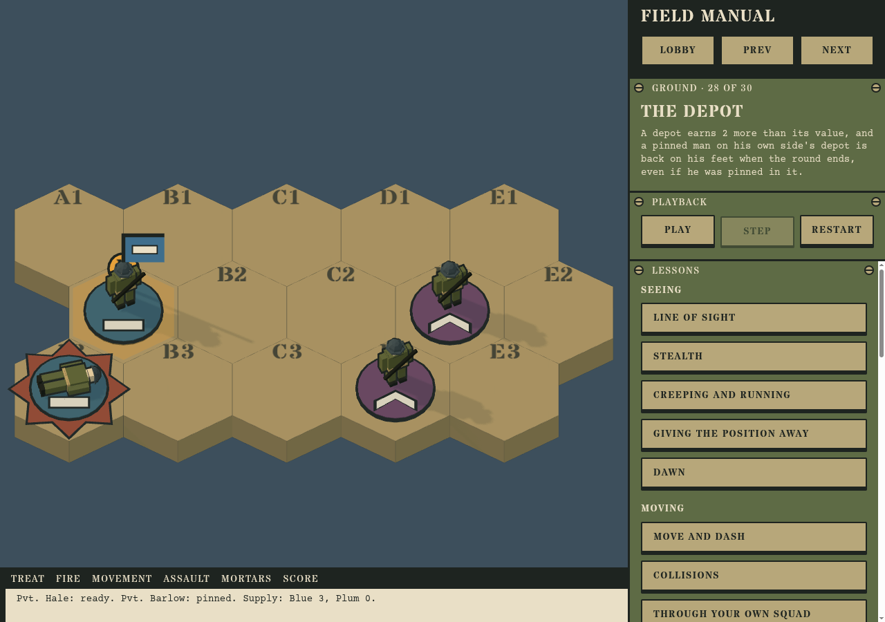
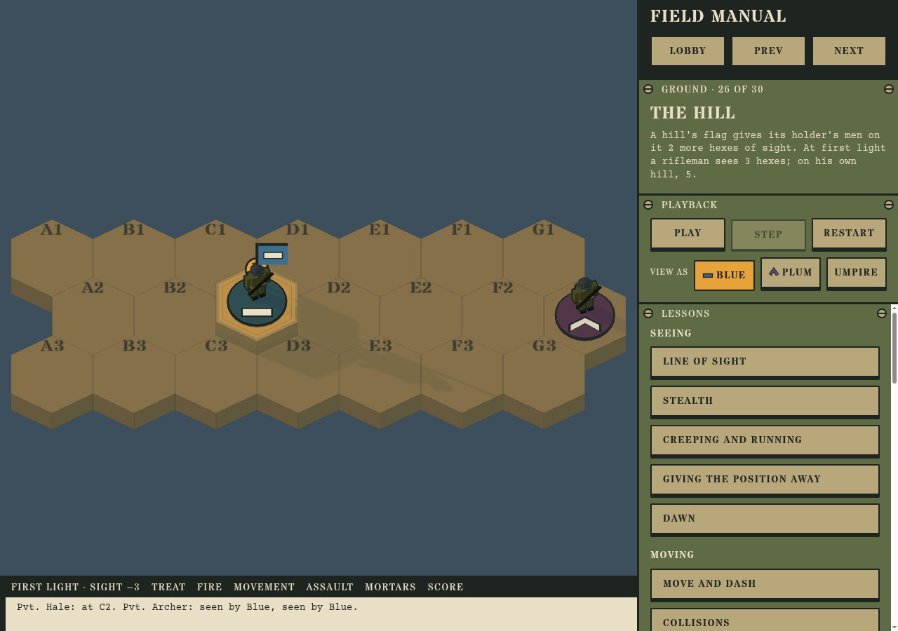
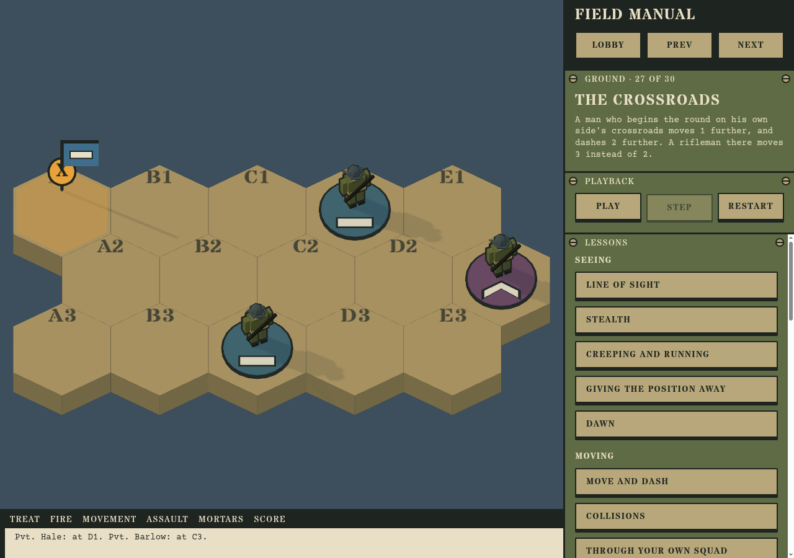

Eval 21 — Objective kinds
Ground gives what it gave in real war. A unit benefits from an objective when it stands on a hex of its area and its owner
holds the flag: a hill adds its sight to sightOf, a crossroads its move to moveOf
(from where the unit stands when the round begins; a dash is twice that), a village and a depot add their supply to what
the flag earns, and a depot rallys a pinned man at the end of the score phase even if he was pinned that round. The
numbers are OBJECTIVE_KINDS (table below, read live). Only Vite is needed: npx vite --port 5196 --strictPort,
then http://localhost:5196/eval/21-objective-kinds.html. ?obj=D&owner=0&order=move&type=rifleman
sets the controls.
What the implementer saw (2026-11-19): this page opened in headless Chromium (Playwright's
build, SwiftShader WebGL, driven over the DevTools protocol) on a Vite at 5196: the board drew; the screenshots below were taken from it.
/?manual=hill, crossroads and depot were opened the same way and stepped through with the Step
key to the end, with no console error; the closing lines read "Pvt. Hale: at C2. Pvt. Archer: seen by Blue.", "Pvt. Hale: at D1.
Pvt. Barlow: at C3." and "Pvt. Hale: ready. Pvt. Barlow: pinned. Supply: Blue 3, Plum 0.". On this page a rifleman on the hill's
edge hex (H7) sees 40 hexes with Blue's flag and 38 without: the woods round the hill stop most of the extra reach there.
1. The real board on crossroads, a man on each kind
A copy of mapFor(4) with one Blue unit standing on the first free hex of the chosen objective's area and one Plum
rifleman far off. The amber rings outline the chosen area; the board's fog is what that one man sees (viewFor); the dots are
orderOptions for the chosen order (his reach). Flip the flag between Blue's and nobody's (or Plum's) and watch both change.
The map has no objective of kind crossroads (task 22 puts fords on one); the last entries of the list are the
map's villages re-kinded as a crossroads in a copy of the map, which is the only way to see that kind on this board. Everything else
is the real map.
2. The new lessons in the real manual
Group Ground: hill (at first light a rifleman sees 3;
from his own hill 5, and the man four hexes off is seen),
crossroads (the man who starts on Blue's crossroads goes
3, the man beside it 2), depot (both men pinned in the fire
phase; the one on Blue's depot is up at the round's end). The village's gift is quoted in the Supply lesson
(supply: A earns 2 + 1). Press Play (or Step).
3. From seeded matches, 2026-11-19
Real runs, npx tsx scripts/seeded.ts --figures 900 (seeds 1001 to 1900: 300 matches for each player count, Supply Line,
the scripted players of scripts/seeded.ts, who walk to objectives and shoot at what they see; they do not seek a kind's
gift). Held is the share of flag-rounds (after each round's captures) in which somebody held the flag. At the end: the share of
that kind's flags held by nobody, by the seat whose HQ is nearest the area, by another seat, and by a seat that won the match. The hill
is the same distance from every HQ, so it has no nearest seat. No objective on crossroads is of kind
crossroads, so that kind has no row.
| Kind | flags a match | held | end: nobody | end: nearest seat | end: another seat | end: a winner | unit-rounds benefiting, a match | rallies a match |
|---|---|---|---|---|---|---|---|---|
| hq | 4 | 0.75 (0.51 / 0.75 / 1.00) | 0.24 (0.48 / 0.24 / 0) | 0.76 | 0 | 0.26 | — | — |
| village | 4 | 0.51 (0.45 / 0.51 / 0.57) | 0.21 | 0.66 | 0.13 | 0.37 | — (gives supply only) | — |
| hill | 1 | 0.43 | 0.23 | — (none nearest) | 0.77 | 0.47 (0.54 / 0.44 / 0.44) | 2.19 | — |
| depot | 4 | 0.50 (0.40 / 0.52 / 0.59) | 0.24 (0.37 / 0.21 / 0.15) | 0.66 | 0.10 | 0.34 | 11.42 | 1.01 (0.57 / 0.98 / 1.48) |
An empty HQ (no seat on its zone) counts as held by nobody, which is all of the 0.48 with two players and the 0.24 with three. Every HQ of a seated player was still its owner's at the end: no HQ was lost in the 900 matches (as before this task).
| players | mean score, each seat (before) | (after) | seat against the others (before) | (after) | win share (before) | (after) | supply a seat a round (after) |
|---|---|---|---|---|---|---|---|
| 2 | 51.0, 55.0 | 84.2, 97.5 | −4.0, +4.0 (± 2.2) | −13.3, +13.3 (± 3.4) | 0.43, 0.57 | 0.39, 0.61 | 6.74 |
| 3 | 41.6, 30.9, 44.5 | 69.3, 55.1, 79.6 | +3.9, −12.2, +8.3 (± 1.5) | +1.9, −19.4, +17.4 (± 2.5) | 0.38, 0.19, 0.44 | 0.35, 0.17, 0.48 | 5.56 |
| 4 | 26.5, 33.5, 33.3, 30.2 | 45.9, 57.4, 60.1, 54.0 | −5.8, +3.5, +3.3, −0.9 (± 1.3) | −11.3, +4.1, +7.7, −0.5 (± 2.1) | 0.19, 0.30, 0.30, 0.22 | 0.17, 0.26, 0.35, 0.23 | 4.81 |
Reading. Scores go up by about three quarters (villages and depots earn 3 more each a round between them), so a seat's edge in points grows with them; as a share of the mean it grew with two players (about 8% to 15%) and stayed about where it was with three and four. Supply a seat a round was 4.2 / 3.5 / 3.1 (task 18's tuning); it is now 6.7 / 5.6 / 4.8, so a rifleman's buy-back (8) is about 1.2 to 1.7 rounds of income instead of 2 to 2.5. The numbers in the table are the task's, verbatim; nothing was retuned.
Checks run 2026-11-19: npm test 733 passed; npm run typecheck clean; npm run build built;
npm run bots -- --matches 200 (seed 136270192, and again as seed 136880991 after the last change) 200 of 200 passed, and 60 Last Stand matches
passed. The two digest sets were re-pinned; with every kind zeroed first, both came out as before (combined 3fbfda4ab7a264ee and
f9d6449ab8066436).
4. Screenshots, from this page and the manual




/?manual=hill before Play.
/?manual=depot before Play.
/?manual=depot at the end: the man on the depot up, the man beside it pinned.
/?manual=hill at the end: from his own hill he sees G2.
/?manual=crossroads at the end: D1 and C3.What does not work, or was not looked at
- No
crossroads-kind objective on any real map yet. The rule is tested, in the lesson and on this page's re-kinded copy, but no match oncrossroadscan use it until task 22. - The board animates a move's steps beyond the type's
moveas running (the lowpoly kit'sdashes(step)readsUNITS[type].move; it does not know the state). So the third step of a rifleman's move off a crossroads is drawn as a run. It is only the look; the kit interface would have to carry the allowance to fix it. - The play screen's hex description ("hill D, 3 a round, gives its holder sight +2, your flag") and unit card line ("Hill: sight +2")
were tested as text (
src/client/ui/ground.test.ts) and typechecked inplay.ts; the play screen itself was not opened in a browser for this task. - The seat gap with two players grew with the higher scores (see the table); the scripted players do not seek gifts, so these figures say how the board pays, not how people will play it.
- The manual's closing line said a "seen by" once for every
seenByexpectation, the ones about an earlier round too ("seen by Blue, seen by Blue"); it now speaks only of the end (src/manual/show.ts). The Dawn lesson's line changed with it. Found while checking the hill lesson. - Test helpers:
resolve.test.ts's default objective is now anhqwith no zone (a kind that gives nothing), and three lessons (phases,score,flags) usecrossroadsobjectives so that their numbers stay about the rule they show. The digest test's floor for men down in the fifty matches went from more than 100 to more than 90: the new set has exactly 100.